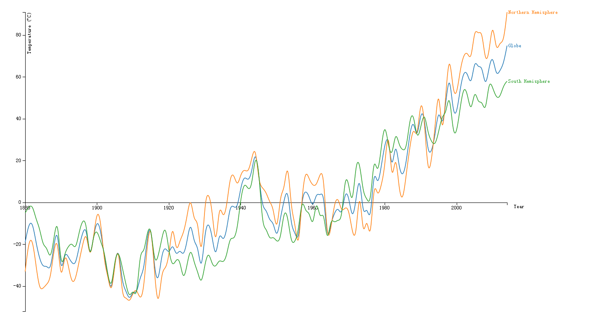
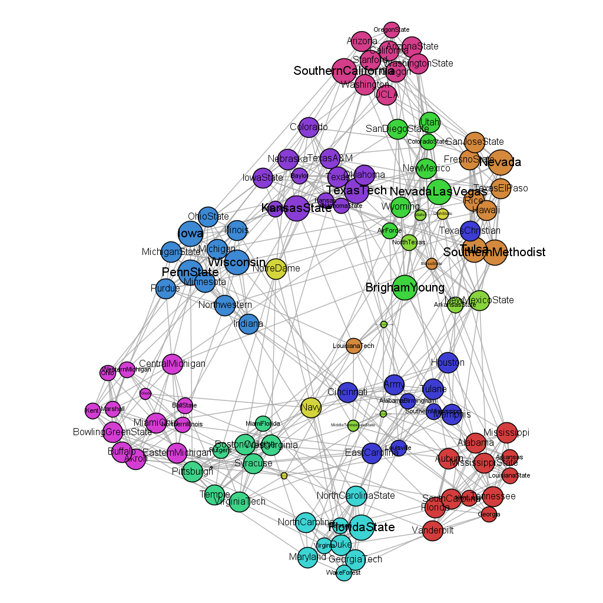

I attended the course "Data Visualization" on Coursera, following is the assignments.
Programming Assignment 1
This graph visualizes the GISTEM data for the Globe and the North and South Hemispheres through all the given years. The x Axis shows the year, and y Axis shows the temperature.
The Orange line describes the data for the Northern Hemisphere, the Green line for the South Hemisphere, and the Blue line is for the Globe.
We put the x axis on the 0 degree, so that we can see the temperature changes .
a.The resulting graph shows an increasing mean Global Temperature over the years.
b.We can also see the temperature of south hemisphere is lower than the globe in most of the years, while the north hemisphere is higher than the globe.
c.The temperature changes significantly near zero degree from 1930 to 1980.

Programming Assignment 2
The dataset I use to draw the graph is "American College Football". It is an undirected graph with 115 nodes and 613 edges. The graph is not so large, even I use all the dataset, I can see the detail of each node.
I use Gephi to visualize the data. Firstly, I use the modularity function to find the community in the graph. Then I encode the color of the node with different communities. The degree of nodes is encoded with size of the node and label. I also find two edges with weight 2, whose size is larger than edges with weight 1.
